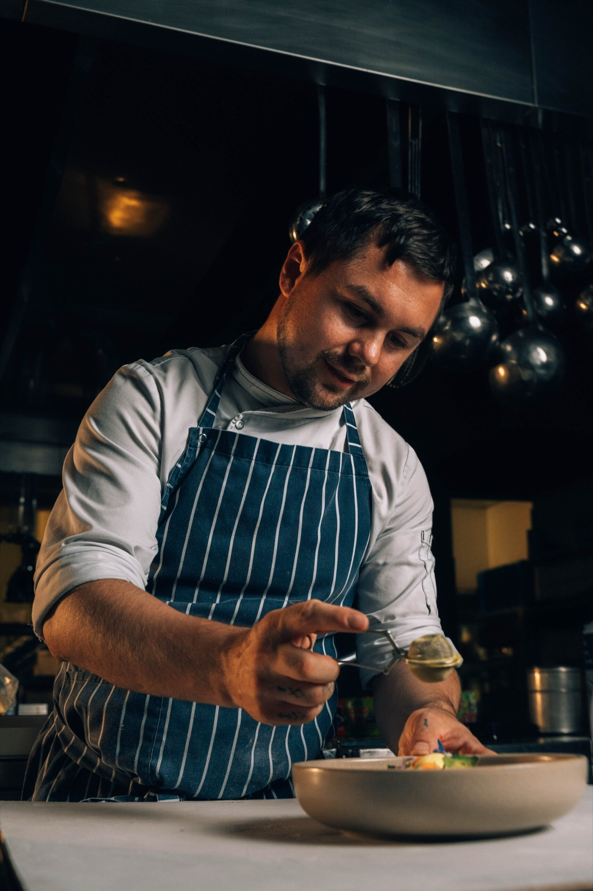
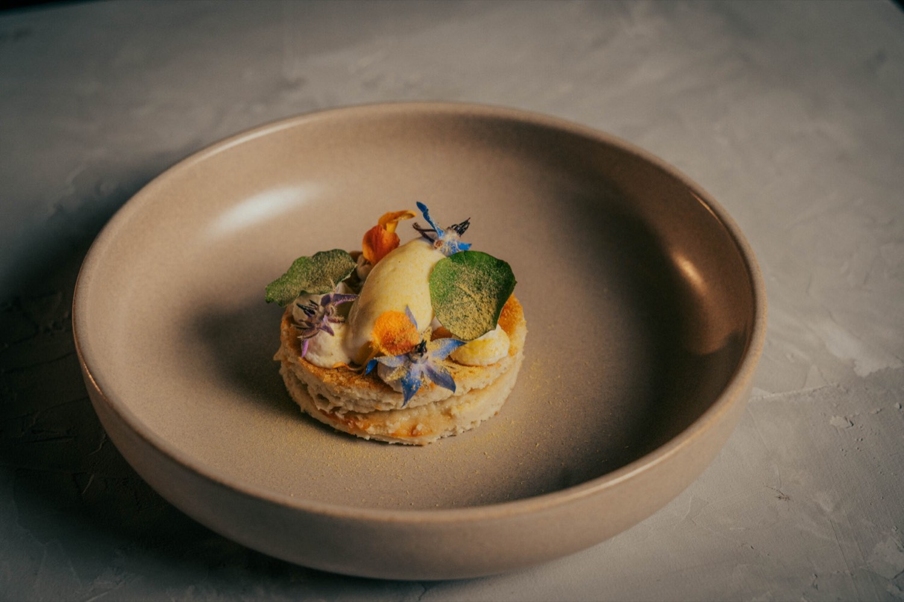

Michelin-geschulte Küche mit AussichtMichelin-trained cuisine with a view
Vier GenussweltenFour worlds of taste
Signature Küche & À la carteSignature cuisine & à la carte
Reichhaltiges Frühstücksbuffet am Morgen, abends ein exquisites 4-Gänge-Menü sowie eine à-la-carte-Auswahl — von der Vorspeise bis zum Dessert mit großem Respekt vor den Zutaten. Dazu eine feine Auswahl handverlesener Weine.A rich breakfast buffet in the morning, an exquisite 4-course menu in the evening plus an à-la-carte selection — from starter to dessert with great respect for the ingredients. Paired with a fine selection of hand-picked wines.
SonnenterrasseSun terrace
Großzügige Sonnenterrasse mit Blick in die Wiener Alpen — die ersten Sonnenstrahlen beim Frühstück einfangen oder den romantischen Abend bei Sonnenuntergang genießen. Entspannung pur.A generous sun terrace overlooking the Vienna Alps — catch the first rays over breakfast or enjoy a romantic evening at sunset. Pure relaxation.
KaffeehausCoffee house
Der ideale Ort, um sich nach einem Spaziergang in den Bergen zu erholen: duftender Kaffee, kühle Erfrischungsgetränke und eine Vielzahl süßer Desserts.The ideal spot to recover after a walk in the mountains: fragrant coffee, cool refreshments and a variety of sweet desserts.
Festival-Gourmetmenü „Grand View“‘Grand View’ festival gourmet menu
Ein exklusives 5-Gang-Menü von Chef Yurii Novikov zum Kultur.Sommer.Semmering — feinste saisonale Zutaten und raffinierte Aromen, inspiriert von Fine Dining auf Michelin-Niveau. Als besonderes Mittagessen.An exclusive 5-course menu by chef Yurii Novikov for Kultur.Sommer.Semmering — the finest seasonal ingredients and refined flavours, inspired by Michelin-level fine dining. Served as a special lunch.
Was auf den Tisch kommtWhat lands on the table
FrühstücksbuffetBreakfast buffet
Reichhaltig, auch für externe Gäste — Mo–Fr 7–10, Sa/So bis 10:30.Rich, also for non-hotel guests — Mon–Fri 7–10, Sat/Sun to 10:30.
4-Gänge-Abendmenü4-course dinner
Jeden Abend — von der Vorspeise bis zum Dessert, dazu handverlesene Weine.Every evening — starter to dessert, with hand-picked wines.
Sommer-Gourmet-MenüSummer gourmet menu
Jeden Samstag neu — mit Live-Musik auf der Terrasse.New every Saturday — with live music on the terrace.
Festival-Menü · 5 GängeFestival menu · 5 courses
Zum Kultur.Sommer.Semmering — Fine Dining von Yurii Novikov.For Kultur.Sommer.Semmering — fine dining by Yurii Novikov.
Geschmack, der bleibtTaste that stays with you
Gäste aus Österreich, Ungarn, Tschechien, der Slowakei, Rumänien und darüber hinaus.Guests from Austria, Hungary, Czechia, Slovakia, Romania and beyond.
Plane deinen BesuchPlan your visit
À la carte, Feiern, Firmenessen und Festival-Menüs — offen für Hotelgäste wie externe Besucher. Für Gruppen ab 10 Personen empfehlen wir eine Reservierung; das Restaurant bietet Platz für bis zu 150 Gäste. Wir empfehlen Smart Casual.À la carte, celebrations, corporate dinners and festival menus — open to hotel guests and outside visitors alike. For groups of 10+ we recommend a reservation; the restaurant seats up to 150. Smart casual is recommended.
Carolusstraße 10, 2680 Semmering · +43 2664 86 41 0 · office@sporthotel-semmering.at
Häufige FragenFrequently asked questions
Wie sind die Öffnungszeiten?What are the opening hours?
Gibt es Ruhetage?Are there closing days?
Ist das Frühstück auch für externe Gäste verfügbar?Is breakfast available to non-hotel guests?
Können Nicht-Hotelgäste zu Abend essen?Can non-hotel guests dine in the evening?
Allergien oder spezielle Ernährung?Allergies or special diets?
Gibt es Parkplätze?Is there parking?
Liechtensteinhaus · 1.350 m
Das Panorama-Restaurant oben am Gipfel — nur per Seilbahn oder zu Fuß erreichbar.The panorama restaurant up at the summit — reachable only by cable car or on foot.
Liechtensteinhaus →
Yurii Novikov
Ausgebildet in Michelin-Sterne-Küchen — Signature Cuisine mit Blick auf die Wiener Alpen.Trained in Michelin-starred kitchens — signature cuisine overlooking the Vienna Alps.

Noch mehr FragenMore questions
Alle FAQs für Sommer & Winter →All FAQs for summer & winter →
 Hirschi
Hirschi